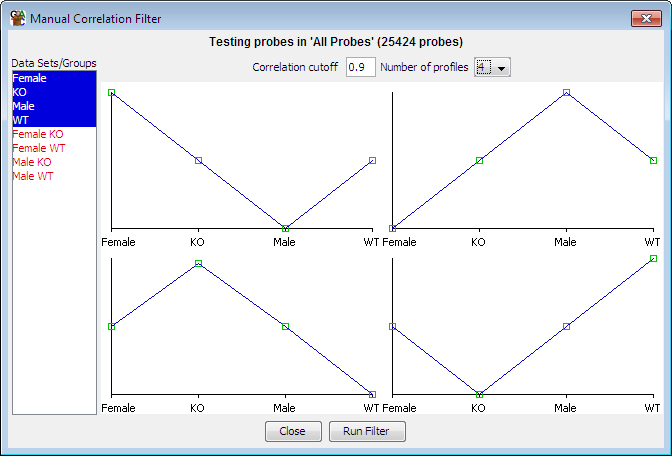

The manual probe correlation filter operates in a similar way to the probe list correlation filter, in that it allows you to find probes which show correlation to a set of reference quantitation profiles across several Data Stores. The difference in the manual filter is that the reference profiles are generated interactively so you can construct whichever quantitation profiles you like.

To create a correlation profile simply select the data stores you want to use from the list on the left and then drag the green boxes on the profile plot to generate the profile you wish to correlate against. You can filter against up to 12 profiles simultaneously. If a probe is able to correlate against more than one of the constructed profiles then it will be added to the profile with the highest correlation (or lowest if your correlation cutoff is less than 0). In this way you can ensure that you get no overlap between correlation clusters.